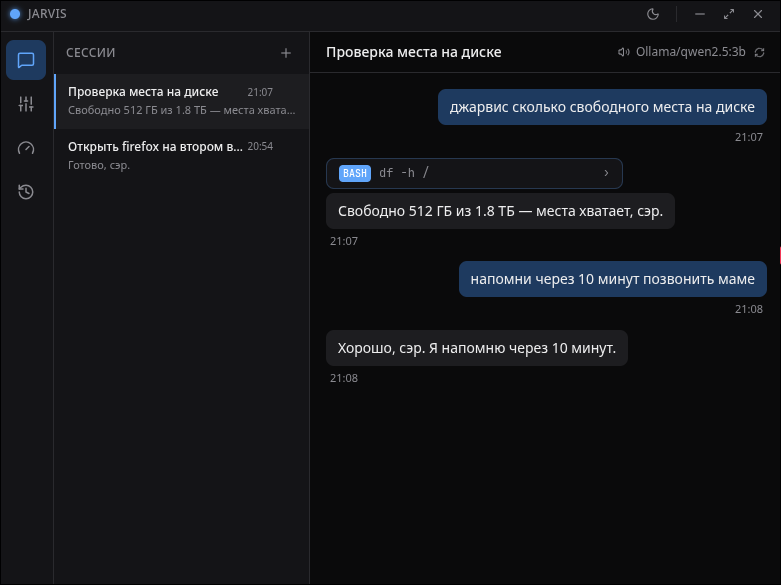
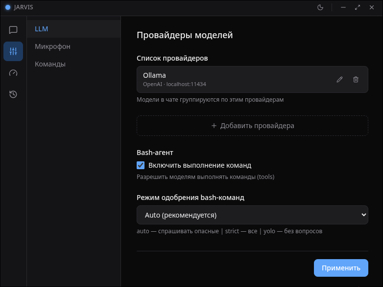
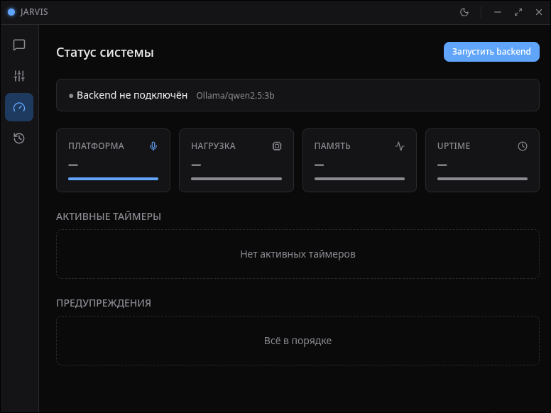

Голос
Wake word «Джарвис», распознавание через Vosk или faster-whisper с Silero VAD, озвучка ответов Piper’ом.
Голосовой ИИ-ассистент с открытым кодом: управляет рабочим столом, выполняет команды, отвечает через LLM и делает всё это голосом — без подписок.
Debian · Fedora · Arch · AppImage · macOS (ARM + Intel)
Голос, система, LLM и агент — в одном локальном приложении.
Wake word «Джарвис», распознавание через Vosk или faster-whisper с Silero VAD, озвучка ответов Piper’ом.
Воркспейсы, окна, скриншоты, громкость, блокировка — Hyprland, KDE, GNOME, i3, Sway, macOS.
Ollama локально или OpenAI/Anthropic/OpenRouter. Агент выполняет реальные команды с трёхслойным approval gate.
Спрашивай Джарвиса из любого места — тот же мозг, тот же bash-агент, только в мессенджере.
«Напомни через 10 минут» — и напомнит даже после перезапуска. Диктовка голосом в любое окно.
Диагностика окружения одной командой: конфиг, аудио, модели, LLM — приложи вывод к баг-репорту.
Настольное приложение с чатом, настройками и статусом окружения.



От звука в микрофоне до озвученного ответа — шесть шагов.
Опасные команды требуют подтверждения, катастрофические заблокированы всегда.
API-ключи не попадают в дочерние процессы.
Ollama работает без интернета, телеметрии нет.
Одна команда проверяет всё окружение — от аудио до LLM.
Ничем не хуже, но бесплатно и с открытым кодом: весь код на GitHub, данные не уходят никуда, никакой подписки. Локальная Ollama — вообще без интернета.
Linux или macOS, микрофон, ~4 ГБ RAM. Для LLM — локальная Ollama либо API-ключ облачного провайдера.
Нет. Распознавание и озвучка работают локально, телеметрии в коде нет. LLM можно держать полностью офлайн.
Есть трёхслойный approval gate: опасные команды требуют подтверждения, катастрофические (rm -rf /, mkfs) заблокированы всегда — даже в самом расслабленном режиме. Все выполнения видны в интерфейсе.
Нет. Linux и macOS. Для Windows посоветуй WSL2 + AppImage — но честно: лучший опыт на Linux.
Ноль. Всё бесплатное: код открыт, модели локальные, нейросети, которыми он собран, — тоже халявные.
Проект начался с одного файла, сгенерированного нейросетью, — после того как в тиктоке попался платный Джарвис с конским ценником. За 3 месяца, в 15 лет, бесплатными нейросетями и без единой строки кода руками — получился вот этот продукт.
Собран при помощи OpenCode
Выбери платформу — все сборки в релизах на GitHub.
Jarvis-2.7.0.AppImage
chmod +x Jarvis-2.7.0.AppImage && ./Jarvis-2.7.0.AppImage